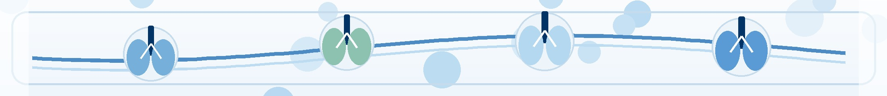
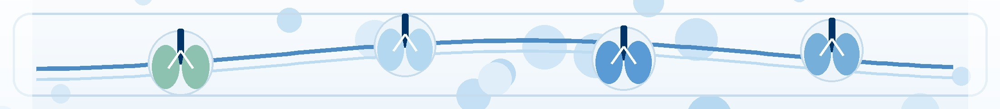
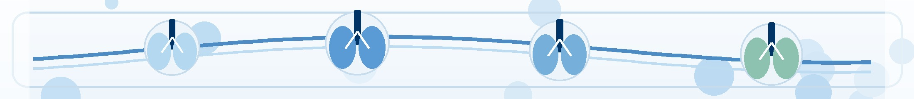
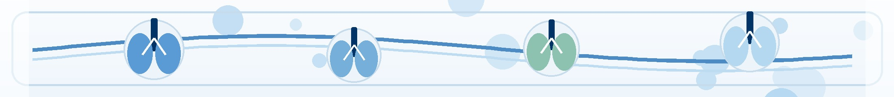

감염후기침,
시간이 약입니다
감기 후 3~8주간 지속되는 기침 — 왜 생기고 어떻게 관리하면 좋은지 알아봅니다
감기 후 기침, 약 없이도 절반 이상은 좋아집니다
감염후기침 (Post-infectious Cough)은 평균 3~8주 내 자연 소실됩니다
감염후기침 (Post-infectious Cough) 이란
감기·독감·코로나19 후에도 기침만 3주 이상 지속되는 상태
급성 상기도 감염 후 콧물·발열 등은 사라졌지만 기침만 3주 이상 지속되는 상태로, 흉부 X-ray가 정상이고 다른 원인이 배제된 경우 진단합니다.
바이러스가 기도 점막을 손상시키고 신경 수용체(TRPV1, TRPA1)를 과민하게 만들면, 작은 자극에도 기침 반사가 쉽게 유발됩니다. 이를 기침 과민 증후군(Cough Hypersensitivity Syndrome, CHS)이라 부르며, 감염후기침은 그 대표 사례입니다.
아급성 기침의 4가지 흔한 원인
감기 후 3주 이상 기침이 남는다면 — 대부분 이 네 가지에서 출발합니다

기침이 기침을 부른다 — Cough Begets Cough
조기에 기침을 억제하면 신경 감작의 악순환을 차단할 수 있습니다

기침 충동이 올 때 이렇게 해보세요
행동적 기침 억제 치료 (BCST) — 기침 빈도를 최대 65% 감소시킵니다

생활 속 기침 관리
헛기침은 모기 물린 곳을 긁는 것과 같습니다 — 일시적 시원함 대신 악순환을 부릅니다
- 충분한 수분 섭취 — 하루 1.5~2L
- 실내 습도 40~60% 유지 (가습기 활용)
- 기침 충동 시 물 삼키기·사탕 빨기
- 코로 천천히 깊게 호흡하기
- 헛기침 대신 부드럽게 침 삼키기
- 충분한 수면과 가벼운 규칙 운동
- 습관적 헛기침 — "에헴!" 절대 금지
- 흡연·간접흡연·연기 노출
- 건조한 환경에 오래 머무르기
- 찬 공기에 갑자기 노출되기
- 큰 소리로 말하기·고함치기
- 카페인·알코올 과다 섭취

시간이 약입니다 — 회복 타임라인
감염후기침은 단계적으로 약해집니다 — 8주를 넘기면 추가 평가가 필요합니다
치료 옵션 — 비약물이 1차, 약물은 의사 처방
증상이 심하거나 4주 이상 지속될 때 단계적으로 약물을 추가합니다
이런 증상이 있으면 즉시 병원으로!
아래 위험 신호 중 하나라도 동반되면 추가 검사가 필요합니다 — 한국은 결핵 중등도 부담 국가입니다
오늘 꼭 기억할 핵심 8가지
감염후기침은 대부분 좋아지지만, 잘못된 습관이 회복을 방해합니다
감기 후 기침,
대부분 좋아집니다
기침 충동이 올 때 물 삼키기·코 호흡으로 악순환을 끊고 자연 회복을 기다려 주세요
광교중앙로 298, 4층
토요일 08:30~13:30
같은 자료를 다시 볼 수 있어요